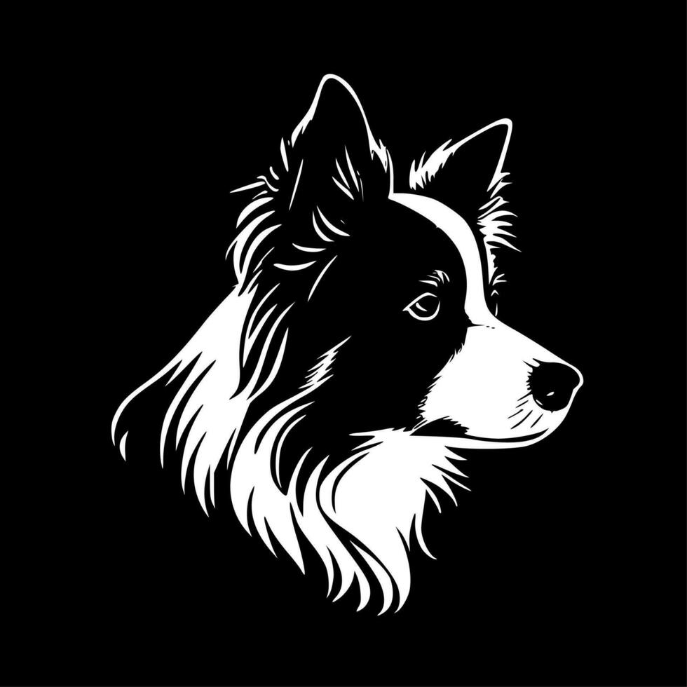

Abrir
Abrir documentos…
Ctrl+O
ABERTOS NESTA SESSÃO
●
Sem título.md
Rascunho
Informações do documento
Nome
Local
Estado
Palavras
Caracteres
Linhas
Tamanho UTF-8
Edição
Salvar
Ctrl+S
Salvar como…
Ctrl⇧S
Buscar no documento
Ctrl+F
Navegar pelos títulos
Alternar Visual / Fonte
Ctrl+/
Modo foco
F8
Exportar HTML
Exportar PDF
Usar tema escuro
Ctrl⇧T
Fechar aba
Ctrl+W

Collie · Atalhos e ajuda
Texto
Título 1
Título 2
Título 3
B
I
</>
S
“
{ }
Inserir tabela 3 × 3
Adicionar linha abaixo
Adicionar coluna à direita
Excluir linha
Excluir coluna
Excluir tabela
Buscar
0 resultados
↑
↓
×
Este arquivo está em modo Fonte. A edição visual pode simplificar sintaxe especial.
—
Endereço do link
Cancelar
Continuar